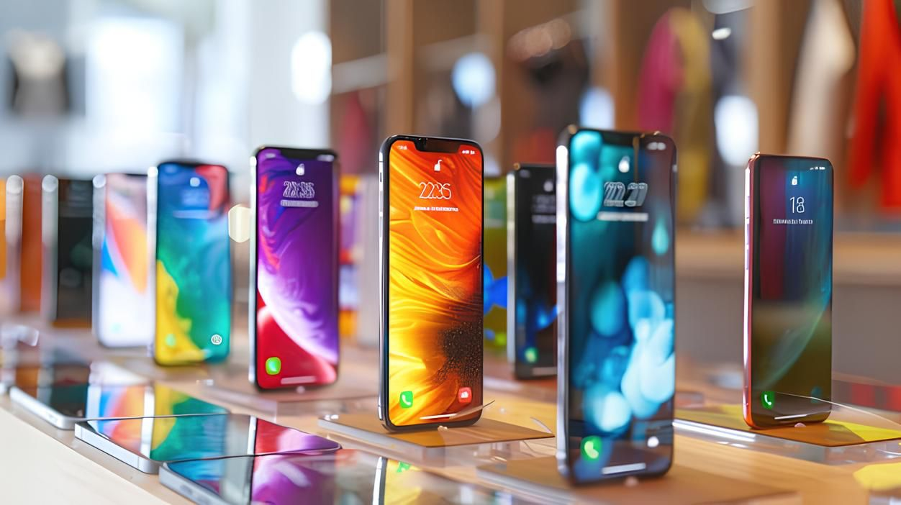
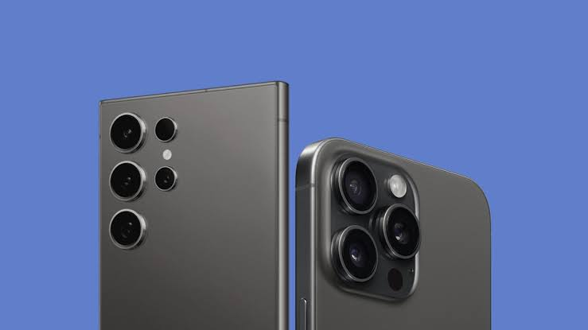

Os smartphones estão mais potentes do que nunca! Gigantes como Samsung, Xiaomi e Apple estão lançando inovações que fazem câmeras profissionais, PCs e Notebooks parecerem obsoletas.

A evolução das câmeras em smartphones é impressionante. Com lentes versáteis, sensores poderosos e inteligência artificial, capturar momentos do dia a dia ficou mais fácil. Essa qualidade está transformando não só as fotos, mas também a produção de conteúdo audiovisual. Com o boom das redes sociais, a qualidade da imagem se tornou essencial. Influenciadores estão usando smartphones para criar conteúdos que, antes, exigiam equipamentos pesados. E no cinema independente, muitos cineastas estão filmando curtas e longas-metragens com celulares, como o famoso "Tangerine", todo gravado com um iPhone.

Os processadores também estão evoluindo rapidamente. Modelos como Dimensity 9300 da MediaTek e Snapdragon 8 Gen 3 da Qualcomm estão entre os melhores de 2024, garantindo desempenho para essas câmeras incríveis. Confira alguns dos destaque:
| Processador | Descrição |
|---|---|
| Dimensity 9300 | Potente, mas ainda não disponível no Brasil. |
| Snapdragon 8 Gen 3 | Encontrado em modelos como REDMAGIC 9 Pro e iQOO 12. |
| Apple A17 Bionic | O motor dos iPhones 15 Pro. |
| Snapdragon 8+ Gen 1 | Equilibrado em eficiência energética e performance. |
| MediaTek Dimensity 9200+ | Ideal para tarefas exigentes. |
A tecnologia dos smartphones, está mudando o jogo. O que antes era exclusividade de profissionais agora está na palma das nossas mãos. Prepare-se, porque essa revolução ainda nos surpreenderá!